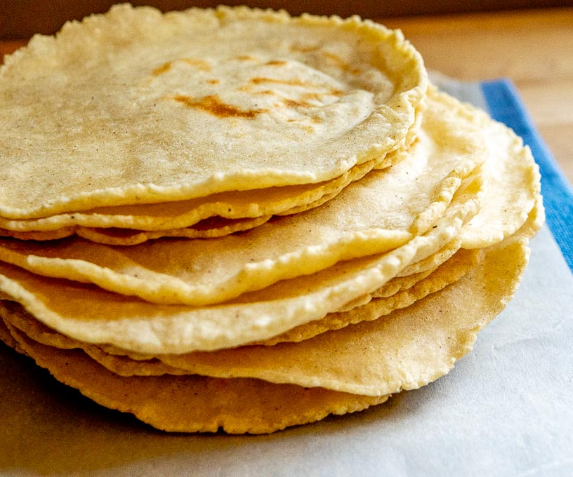

Corn Tortillas

Description
A very simple recipe for homemade corn tortillas, courtesy of Patrick at the "Mexican Please" website.
Ingredients
- 2 cups Masa Harina
- 1.5 cups warm water
- .5 tsp salt
Steps
- Add 2 cups Masa Harina and 1/2 teaspoon salt to a mixing bowl. Add 1 cup of the warm water and stir until the water is
absorbed. Add the rest of the water incrementally until the flour melds into a dough. Use your hands to knead the dough
into a cohesive ball.
- If the dough is sticking to your hands simply add a few sprinklings of Masa Harina to dry it out. Conversely, if the
dough is still crumbly then you can add splashes of water until it becomes cohesive.
- Separate the dough into golf ball sized chunks, this will make tortillas approximately 4 inches across.
- Flatten the dough balls using a flat bottomed pan or a tortilla press. Be sure to line each side of the dough ball with
plastic or Ziploc pieces. I usually just cut off the top of a gallon sized Ziploc bag and then make slits down the
sides, leaving it connected at the bottom.
- Heat a skillet or comal to medium-high heat. (Lately I use a tad over medium heat on my stove and this will have brown
spots forming in about 60 seconds.)
- Add a tortilla to the skillet and flip it after 10 seconds. Then cook each side for about a minute or until light brown
spots are forming on the underside.
- Continue cooking the rest of the tortillas. I usually put one in the skillet and flatten the next one to expedite the
process. Once cooked you can keep them warm by wrapping them in a tea towel or using a dedicated tortilla warmer. Serve
immediately.